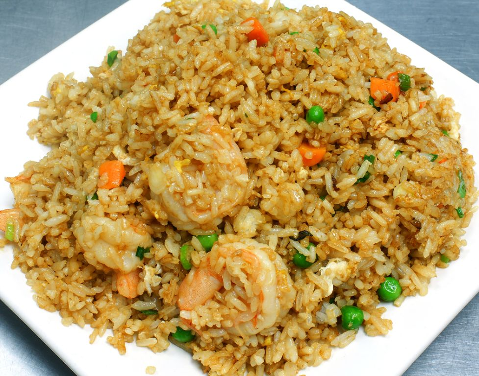

Shrimp Fried Rice

Description
A dish that blends meat, rice, and vegetables into one flavorful meal!
Ingredients
- 1/2 lb Medium-size cooked shrimp
- 2 cloves of Garlic, minced
- 1 cup Peas and Carrots, frozen
- 1 White Onion, chopped
- 2 Eggs
- 1/4 cup Soy sauce
- 4 cups Rice, prepared
- 3 tbsp Sesame oil
Steps
- Prepare rice according to package instructions to make 4 cups cooked rice.
- Heat sesame oil in large skillet on medium heat.
Add onion, garlic, peas, and carrots. Stir fry till tender.
- Crack eggs into pan scramble, mixing throughout vegetables.
- Add rice, shrimp, and soy sauce to pan. Stir and combine all ingredients and remove from heat. Enjoy!